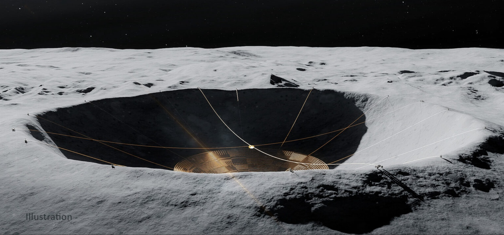

The Absurdity and Possible Reality of a Radio Telescope on the Moon
This article was first published as part of the armaghplanet.com blog.
April 14, 2023 - Jeremy Rigney
What once sounded like a story from science fiction is now quickly becoming a scientific reality, with privately funded projects and NASA-supported studies into the feasibility of a radio dish nestled inside a lunar crater.
There are two issues which must be addressed when observing in the long wavelengths of the radio domain. The first is resolution. A simple equation relates the wavelength of the observed light and diameter of the mirror to the telescope’s angular resolution (the smallest thing it can resolve): angular resolution = 1.22 wavelength/diameter. For optical telescopes a 3 or 4-meter diameter mirror can obtain incredibly sharp images of astronomical objects. However, as radio wavelengths are much longer than optical, larger mirrors (or in this case, dishes) are required to obtain comparable resolution.
The Lovell telescope was the first to push the boundaries of how large a radio dish could be. Completed in 1957, its 76-meter dish could be moved in any direction to view and track distant stars and galaxies.
The year 2000 marked the completion of the Green Bank Radio Telescope (GBT), one of the largest moveable manmade structures on earth. The 100×110 meter parabolic dish was pointed skyward in the search for distant stars, nebulae, and galaxies emitting at the long wavelengths of the radio domain (3 meters – 2.6 mm to be precise).
Green Bank signalled the end of massive moveable dishes for two main reasons: cost and engineering limitations. $100 million was spent on the construction of GBT, and the steel structure weighs over 7500 tonnes. Building large, heavy dishes is a dangerous game, as proven by GBT’s predecessor, the 300 ft (90 meter) Telescope, that collapsed under its own weight in 1988.
Left: The Greenbank Radio Telescope in West Virginia. Right: The Arecibo Telesope in Puerto Rico.
Solutions to large steer-able radio telescope were already being constructed as early as the 1960’s. The Arecibo Telescope consisted of a 305-meter spherical dish constructed within a natural karst depression in Puerto Rico. Instead of the dish moving a receiver was suspended above the dish. The motion of the receiver could be controlled by varying the length of the three support cables, allowing the dish to be “pointed” at different regions of the sky. This design limited the observable sky regions of the telescope to 19 degrees above the horizon. Arecibo observed in a large wavelength regime (300 MHz – 10 GHz, wavelengths 1m – 10 cm) and could observe sources such as pulsars, galactic emission, and asteroids. As Arecibo aged, years of underfunding and increasing maintenance and repair requirements began to take a toll. In 2020 the telescope was decommissioned, and later the same year due to numerous extreme weather events and previous damage, a cable support arm collapsed onto the dish, sealing its fate.
The largest single dish telescope on the planet currently follows a similar design to Arecibo. The Five-hundred-meter Aperture Spherical Telescope (FAST) sits within a karst sinkhole in China. Since first light in 2016 it has detected hundreds of new pulsar and fast radio burst signals.
There are physical limitations to how large a single dish can be, given the space required, and the engineering wizardry that must be performed to construct such giant reflectors. To combat this, a new technology was developed called interferometry. Instead of a single telescope, interferometry uses the combined signals of many radio telescopes observing the same object to simulate the signal received from a much large single telescope. Looking back at our equation for angular resolution, we can replace the ‘diameter’ with ‘baseline’, the furthest distance between two telescopes. The interferometry method can be used to create telescopes with massive collecting areas. This very method was used to create the first images of black holes at the center of the M87 galaxy and our own Milky Way.
The Very Large Array in New Mexico.
The second issue that affects all radio telescopes is interference.
Humans make a lot of noise, be it sound or light. Optical light pollution is a constant problem for astronomers seeking dark skies to capture faint objects in the night sky. Light pollution in radio astronomy takes the form of radio frequency interference (RFI). All electronic devices, communication systems, and power generation and transport networks emit radio waves.
At the longest wavelengths of light, a region of the Earth’s upper atmosphere called the ionosphere interferes with radio waves from space. This limits the science that can be performed at these wavelengths on Earth. Observing at long wavelengths is important for understanding the history of the universe. As light travels through space it undergoes a phenomenon known as redshift. The wavelength of the light is physically stretched as the universe it is travelling through expands. The further the light has travelled, the more it is redshifted. Light from the early universe that was emitted at a wavelength of 21 centimeters, known as the neutral Hydrogen line, has been redshifted to longer wavelengths over the billions of years it has been travelling through space. It is thought that the universe was mostly neutral hydrogen after the big bang, so observing these wavelengths can tell us about the evolution of the early universe. Astronomers have not been able to observe these long wavelengths yet due to the issue of radio interference from humans and the Earth’s ionosphere.
The solution to this is to place a radio telescope somewhere where there are no people, or atmosphere. The first place that comes to mind is perhaps Low Earth Orbit (LEO). Like where Hubble is located, satellites and space telescopes have been launched to this orbit many times in the past. Unfortunately, earth-based radio waves are transmitted in all directions, and a lot of the emission is sent outward into space. Solar activity also has a huge effect on satellites in orbit, launching energetic particles which can damage satellite hardware, while also emitting bright radio waves. As a result, even radio telescopes in space would be subject to interference from Earth. Since the dawn of radio astronomy astronomers have been looking at another location, the Moon (Burns et al. 1990 Scientific American).
Left: Concept art for a lunar observatory in 1990. Right: The FARSIDE lunar radio telescope concept.
The far side of the moon is sheltered from Earth-based radio interference, and the moon has no strong ionosphere to disrupt incoming low frequency signals. Ultraviolet telescopes were placed on the moon as early as the Apollo missions. While radio telescopes were being considered for the moon as early as the 1960’s, issues with construction and deployment meant they never materialised. Building a large stable radio dish on the moon means overcoming the extreme temperature variations on the lunar surface and the large weight of materials required to construct a large solid dish (see NASA review article).
In 2019 China landed a spacecraft on the far side of the moon (Chang’e 4). The probe was equipped with radio antenna to observe sources without radio interference or ionospheric interference and was the first telescope deployed since the astronauts landed during the Apollo missions. Its primary function was to test the effectiveness of the moon at blocking Earth-based radio signals.
Another feasibility concept has been designed at Brookhaven National Laboratory. Called the Lunar Surface Electromagnetic Experiment (LUCEE-Night), the telescope will consist of basic antennas to test optimum locations to place a lunar far-side radio telescope. The probe is currently scheduled to launch in 2025.
As of 2022, the Lunar Crater Radio Telescope (LCRT) is in Stage II funding from NASA’s Innovative Advanced Concepts program. The design uses a light-weight deployable mesh that would be pulled outward with cables attached to a crater rim. The project is designed to be deployed remotely without the need for astronaut intervention. The complete dish/mesh would be 300 meters in diameter and could be capable of detecting radiation from the early universe.
Other proposals over the years included an array of antennas utilising interferometry, however this was deemed too optimistic for a first-attempt telescope. Labelled FARSIDE, the concept consisted of multiple dishes to be remotely set-up by autonomous rovers and connected to form a lunar interferometer. This project is in the early concept phase with support from Blue Origin and is a promising future project for more powerful lunar telescope designs.
With renewed interest in lunar telescope construction, it is likely that we will see one of the current concepts come to life and be launched with the Artemis mission in the next decade.
For more information on the LCRT concept check out this video.